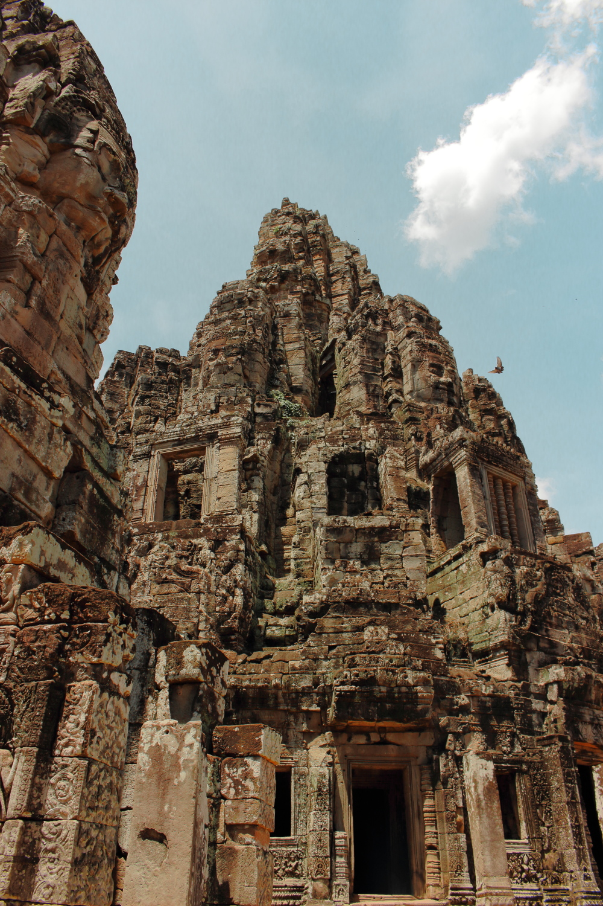

Cambodia : Siem Reap and Angkor Wat
May 22nd - 25th
If Call Me By Your Name is the perfect encapsulation of first love, then In the Mood for Love is a haunting echo of letting that breath go. And so I travelled alone to the great temples, listened to the nature of daylight, and whispered twenty-one years of heartbreak into the stone age.
Chow Mo-wan: In the old days, if someone had a secret they didn't want to share... you know what they did? Ah Ping: Have no idea. Chow Mo-wan: They went up a mountain, found a tree, carved a hole in it, and whispered the secret into the hole. Then they covered it with mud. And leave the secret there forever. Ah Ping: What a pain! I'd just go to get laid. Chow Mo-wan: Not everyone's like you.
- In the Mood for Love
Angkor Archaeological Park in Siem Reap, Cambodia, houses the remains of several capitals of the Khmer Empire from the 9th to 15th centuries. Since I was kindergarten aged and dragged along by grandma to pray at Buddhist temples during New Years, I have never shown much interest in religious structures except for the stories about dead childrens' souls nestling in leaves of the huge Indian almonds in the courtyards. So I decided that on my Southeast Asia pilgrimage, I would keep temple time to the minimum amount possible without looking uncultured. Since I only had one shot, Bhutan was too expensive to fly to, and I had no interest in gold-lined, plated, and painted temples, 'this Angkor Wat place' rated number 1 on so many travel guides was the place to be. "Angkor" means city, and this was once the greatest and biggest city on earth, where successive kings built temples for their worship and burials as gods. Sounded good enough. I surrendered a hundred bucks (NZD) for the full 3 day admission, refused to buy the picture book guide for another hundred, rejected a private tour guide for 70, got a tuktuk and driver for 20, a free bike rental, and the backgroud knowledge from 2 google searches and a 3 minute movie scene with no dialogue.
I guess what I'm meaning to say is that this post contains zero culture, and was fabricated entirely from excessive instrospection (and probably a dash of heatstroke inspired fantasies) birthing surreal convictions in the form of convoluted high-school-level fanfiction.
Angkor Waaaaaat the fanfiction
“Out of my thoughts! You are part of my existence, part of myself. You have been in every line I have ever read . . . [T]o the last hour of my life, you cannot choose but remain part of my character, part of the little good in me, part of the evil . . . [L]et me feel now what sharp distress I may. O God bless you, God forgive you!”
- Great Expectations. Image adapted from The Invisible Woman.
Most days, I forgot. I laughed with my friends over mix veg rice, made faces at steamed egg, and listened to the same song on the bus for weeks. I knew to bring sweaters to class, and that an iced drink + AC for breakfast sometimes gave me diarrhea. Routine made me feel like my life had always been this way. And then on the way home, after a shower, or sitting alone with stale chips and a McSpicy at the McDonalds in Clementi, watching all the last bus goers... something happened. Thinking about the old lady walking down the road, rain bluring street lights on a taxi window, feeling a dense breeze through the vents in my bedroom; some things triggered thoughts I haven't had in a while. And then I'm shaken awake, thinking about a line of trees in winter with branches like hands in the indigo, remembering the scratched texture of that round metal table I came to sit at, replaying the ending montage from Arrival, and thinking of you.
And I wondered, and wondered, and wondered. I walked through those days again, getting lost in blurry words to lose footing in an autumn gust swinging doors and sinking brown suede in a puddle, under a little umbrella. I was underwater, trying to see through bubbles. You ran through my fingers, and I gasped for air. I sat above Erlich's pool, looking down at myself. No tears came, I dried off, and forgot you over dinner.
The broken roads of Siem Reap threw dust high in the hot air, and I squinted at the bright light. After nearly being thrown off the creaking tuktuk, I dragged my feet accross the floating plastic bridge, and sighed at the woman spreading her chiffon train on the steps of the entrance. She modestly leaned her white legs to the side, knees together, and peered at the camera with her chin tucked. I waited, fearing for the worst.
The main corridors were packed with bodies; tour guides yelled into speakers to gather the herd in the main halls, and sanwiched everyone else with them. I fought my way past umbrellas in the shade. Stumbling into a the side gallery, I was comforted by the smell of incense. I walked through symmetrical arches, understanding nothing but impressed by the architechure. A guide was passionately lecturing on the war mural to a family staring outside into the bright day. The child sat on the side, dangling his legs and the mother watched her son, squatting and fanning herself. The father asked if they could move on from this war of king so and so, and the tour guide immediately rejected: "No! 5 more minutes!"
The current of the day took me further into the temple, and finally up to its elevated central structure. After just a few steps up the stairs, the couple in front of me stopped, and the woman looked quite dazed. I asked if she was okay.
"No, she is NOT okay!" her husband snapped, glaring at me.
I survived for an hour, but my romantic dreams were broken. I came to find peace in the largest religious monument in the world, and instead of finding Tony Leung with a jacket suavely slung over his jacket, I was drowing under the sass of over-roasted people in the 33C heat.
And then they left.
The clock striked 12:30, when all the tour schedules rolled over to lunch. Within a few minutes, I became the only person in that inner courtyard. The silence that followed fell like first light, and it takes me a moment to breathe it all in. There was harshness in the unwavering midday sun. And there was loudness in the silence, like tuning into cicadas on still summer days. As if waking inside a dream, I felt the weight of bricks and the age of pillars pressing on my chest, a twinge of sadness in this behemoth grandeur. Angkor Wat had come alive.
It was like reaching the summit, floating above the drop-off into the deep blue, or holding a child for the first time. I remembered it like a smell I couldn't name, this vast and deep resonance. I was a fledgling swept by a gust of wind. It knocked the breath from my throat, and a shiver ran down my back. I could only understand frames of the world hanging before me, imagine time that I would never live, and cry over pebbles on my knees.
Absolute impermanence.
I looked to the light, cusped my hands, and sprung from darkness the words: I loved you. Time passed like waves over rocks, and when the sun rose again, I would remember you like the wind: just a shiver.

The hole from In the Mood for Love.
Bayon reality
The solemn Angkor Wat gave me a momemnt in which I cooked self-revelations full of hot air, and made me feel #blessed for the rest of they day. The afternoon was ripe when I got to Angkor Thom and Bayon temple. I'm guessing that it was not recently restored as other temples, because the stones were covered in plenty of moss and lichen, with saplings sprouting from the cracks. This unpolished look, coupled with the head structures full of rounded shapes of heads and indistinct edges, in contrast to Angkor Wat's long symmetrical halls and square libraries, made Bayon feel more like the ruins of an ancient city than a stately temple. For those who play Skyrim, this was real life Markarth.
I visited a few other temples in the rest of my tuktuk day, but Angkor Wat and Bayon were by far my favourite. Worst parst of the day was probably Phnom Bakheng, where there was a long line approaching sunset as the site was elevated and could only hold so many people at a time. The hike up the hill was small, the line about 15 minutes, but totally not worth the clouded sunset and 200 people standing around taking photos of clouds.
The reality behind aesthetic Lonely Planet photos.
Over the remaing 2 days of my pass, I returned to Angkor on bike and experienced how much physical conditions change perception. I never did make that sunrise over Angkor Wat, but came in the late afternoons brewing soft drizzles one day and then honeyed light the next. The Angkor Wat I knew of scorching heat became mellow under the overcast and the golden hour, and I no longer felt like a girl flung out of space. Pictures that I thought were branded into my mind, were just scratches on a glass pane. I gave up on mercurial love lines, and made use of the soft lighting for #instatime.